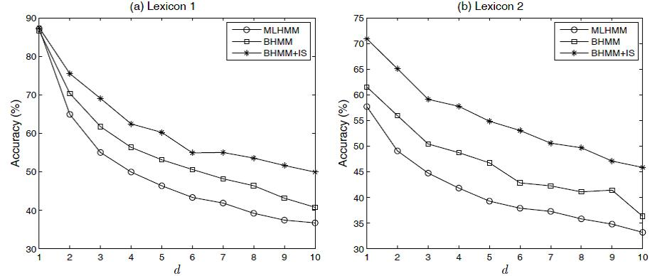

Weakly Supervised Part-of-Speech Tagging for Morphologically-Rich,
Resource-Scarce Languages
Kazi Saidul Hasan and Vincent Ng.
Proceedings of the Twelfth Conference of the European Chapter of the Association for Computational Linguistics, pp. 363-371, 2009.
Click here for the
PostScript or PDF
version.
The talk slides are available here.
Abstract
This paper examines unsupervised approaches to part-of-speech (POS) tagging
for morphologically-rich, resource-scarce languages,
with an emphasis
on Goldwater and Griffiths's (2007) nonparametric
fully-Bayesian approach originally developed for English POS tagging.
We argue that existing unsupervised POS taggers unrealistically assume
as input a perfect POS lexicon, and
consequently, we propose a weakly supervised fully-Bayesian
approach to POS tagging, which
relaxes the unrealistic assumption by automatically acquiring the lexicon from a small amount of POS-tagged data.
Since such relaxation comes at the expense of a drop in tagging accuracy, we
propose two extensions to the Bayesian framework and
demonstrate that they are effective
in improving
a fully-Bayesian POS tagger for Bengali, our
representative morphologically-rich, resource-scarce language.
BibTeX entry
@InProceedings{Hasan+Ng:09a,
author = {Hasan, Kazi Saidul and Vincent Ng},
title = {Weakly Supervised Part-of-Speech Tagging for Morphologically-Rich, Resource-Scarce Languages},
booktitle = {Proceedings of the 12th Conference on the European Chapter of the Association for Computational Linguistics},
pages = {363--371},
year = 2009
}
